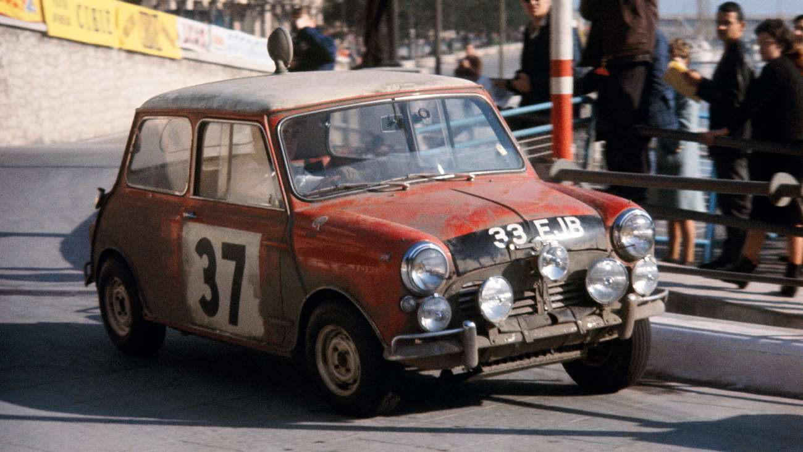

Mini Cooper S
John Cooper knew the Mini’s potential after Roy Salvadori won an informal road race to the Italian Grand Prix, beating fellow star Reg Parnell in an Aston Martin DB4 with an early Mini Cooper prototype. It took a few years to realise that giant-killing ability on the world stage but Paddy Hopkirk’s famous win in the 1964 Monte Carlo Rally, and successive ones for Timo Mäkinen and Rauno Aaltonen in 1965 and ’67, sealed the Mini’s reputation on twisty, snow-covered Alpine passes. The fact you could by one that looked – and went – much like the rally versions from your local BMC dealership is as big a part of Mini legend as Michael Caine and The Italian Job.